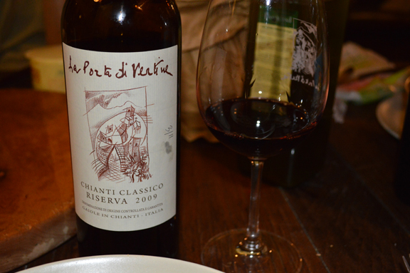
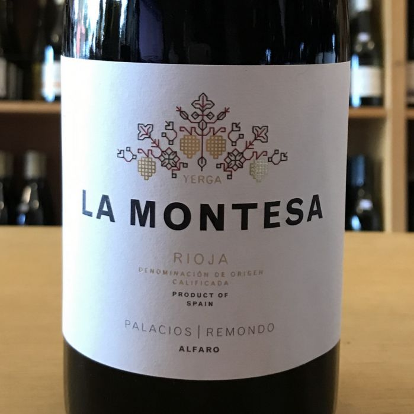

Chianti Classico, La Porta di Vertine

Стилистика вина:
Красное - фруктовое, среднетелое, выдержанное в дубе.
Дегустационные характеристики:
Вино насыщенного рубиново-красного цвета с притягательными ароматами темно-красной вишни, цветов, мяты и
специй. Гармоничное, прекрасно сбалансированное во вкусе с долгим мягким послевкусием.
Гастрономия:
Прекрасно сочетается с жареным мясом, цыпленком, паппарделле с мясным соусом и сырами средней
выдержки.
Виноградники:
Самый знаменитый виноградник хозяйства Conca d–Oro di Vertine образует некий амфитеатр на вершинах
нескольких холмов. Крутой склон и хорошая освещенность повлияли на его название - с итальянского оно
переводится, как +Золотая раковина Вертине-. В La Porta di Vertine придерживаются философии
органического виноградарства, а их главными помощниками являются коровы особой кианской породы.
Способ выдержки:
18 месяцев в дубовых бочках.
La Montesa, Bodegas Palacios Remondo

Стилистика вина:
Красное - элегантное, насыщенное, выдержанное в дубе.
Дегустационные характеристики:
Вино яркого рубинового цвета с ароматами лесных ягод, кедра, пряностей, нотками темного шоколада и кофе.
Насыщенный, комплексный вкус с шелковистыми танинами и длительным ягодным послевкусием.
Гастрономия:
Идеально в сочетании с мясом, приготовленным на гриле и выдержанными сырами.
Виноградники:
Отдельный виноградник "La Montesa" площадью 90 га, на высоте 550 м над уровнем моря. Почвы: суглинок,
галька, с известняковыми включениями и большим содержанием железа.
Способ выдержки:
12 месяцев в дубовых бочках из французского (75%) и американского (25%) дуба.
Способ производства:
Ручной сбор. Ферментация проходит в стальных емкостях в течение 24 дней.
Le Difese, Tenuta San Guido
 Стилистика вина:
Стилистика вина:
Красное - яркое фруктовое, с хорошей кислотностью, выдержанное в дубе.
Дегустационные характеристики:
Вино глубокого рубиново-красного цвета с богатым, интенсивным ароматом, насыщенным тонами ежевики,
фиалки и нотками специй. Полнотелое, округлое во вкусе с ощутимыми, но бархатными танинами, прекрасно
вписанными в структуру вина и отлично сбалансированными яркой кислотностью. Продолжительное многогранное
послевкусие.
Гастрономия:
Вино подавать к мясным блюдам, дичи, мясу на гриле, выдержанным сырам.
Виноградники:
Общая площадь виноградников хозяйства составляет 90 га. Бедные каменистые почвы, близость моря,
усиливающая разницу между дневными и ночными температурами, а также низкая урожайность - все это
позволяет получить прекрасно вызревший виноград высокого качества. Высота над уровнем моря: 100-300 м.
Плотность посадки: 5500-6250 лоз/га. Форма куста: кордон.
Способ выдержки:
В течение 12 месяцев в барриках.
Способ производства:
Ферментация проводится в емкостях из нержавеющей стали при строгом температурном контроле. Мацерация
длится в течение 12-14 дней для каберне совиньона и 15-18 дней - для санджовезе. Перед бутилированием
проводится легкая фильтрация.